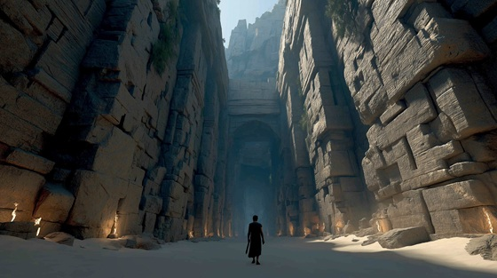

Guided only by Ariadne’s thread and his own courage, Theseus entered the twisting corridors of the Labyrinth — a maze designed to confuse, trap, and destroy.
Each step closer to the center brought him closer to the heart of the nightmare: the waiting Minotaur.
"Into the Labyrinth" captures the suffocating fear, madness, and heroic will it took to step into the jaws of death itself.
Into the Labyrinth
Stone on stone, breath to breath
I walk the veins of living death
No sky above, no ground below—
Only the maze the damned must know
No star to guide, no voice to call—
The walls close in, they watch me fall
Into the labyrinth, breathless and blind
The walls devour the soul and mind
Step by step, no turning back—
The beast awaits down every track
The thread unwinds, the light grows thin
The walls constrict, they draw me in
Each turn a snare, each path a scream—
A grave disguised as broken dream
No hand of god, no whisper near—
Only the drum of rising fear
Into the labyrinth, breathless and blind
The walls devour the soul and mind
Step by step, no turning back—
The beast awaits down every track
The stone grows cold, the heart beats loud
The air is thick, the fear unbowed
But still I walk, and still I dare—
The monster's breath pollutes the air
Walls of stone, hands of night
I tear through fear, I blaze through fright
Thread of hope, blade of cries—
I walk the path where heroes die
Into the labyrinth, breathless and blind
The blood will spill, the gods will bind
Step by step, no gods, no track—
The beast shall break or I turn black
Into the dark, into the stone—
I face the beast and die alone